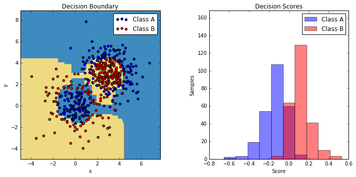
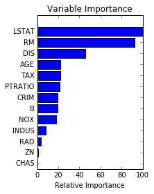

Ensamble
The goal of ensemble methods is to combine the predictions of several base estimators built with a given learning algorithm in order to improve generalizability / robustness over a single estimator.
Two families of ensemble methods are usually distinguished:
-
In averaging methods, the driving principle is to build several estimators independently and then to average their predictions. On average, the combined estimator is usually better than any of the single base estimator because its variance is reduced.
Examples: - Bagging methods, - Forests of randomized trees, ...
-
By contrast, in boosting methods, base estimators are built sequentially and one tries to reduce the bias of the combined estimator. The motivation is to combine several weak models to produce a powerful ensemble.
Examples: - AdaBoost, - Gradient Tree Boosting, ...
%matplotlib inline
1. Single estimator versus bagging: bias-variance decomposition (source)
This example illustrates and compares the bias-variance decomposition of the expected mean squared error of a single estimator against a bagging ensemble.
In regression, the expected mean squared error of an estimator can be decomposed in terms of bias, variance and noise. On average over datasets of the regression problem, the bias term measures the average amount by which the predictions of the estimator differ from the predictions of the best possible estimator for the problem (i.e., the Bayes model). The variance term measures the variability of the predictions of the estimator when fit over different instances LS of the problem. Finally, the noise measures the irreducible part of the error which is due the variability in the data.
The upper left figure illustrates the predictions (in dark red) of a single
decision tree trained over a random dataset LS (the blue dots) of a toy 1d
regression problem. It also illustrates the predictions (in light red) of other
single decision trees trained over other (and different) randomly drawn
instances LS of the problem. Intuitively, the variance term here corresponds to
the width of the beam of predictions (in light red) of the individual
estimators. The larger the variance, the more sensitive are the predictions for
x to small changes in the training set. The bias term corresponds to the
difference between the average prediction of the estimator (in cyan) and the
best possible model (in dark blue). On this problem, we can thus observe that
the bias is quite low (both the cyan and the blue curves are close to each
other) while the variance is large (the red beam is rather wide).
The lower left figure plots the pointwise decomposition of the expected mean
squared error of a single decision tree. It confirms that the bias term (in
blue) is low while the variance is large (in green). It also illustrates the
noise part of the error which, as expected, appears to be constant and around
0.01.
The right figures correspond to the same plots but using instead a bagging
ensemble of decision trees. In both figures, we can observe that the bias term
is larger than in the previous case. In the upper right figure, the difference
between the average prediction (in cyan) and the best possible model is larger
(e.g., notice the offset around x=2). In the lower right figure, the bias
curve is also slightly higher than in the lower left figure. In terms of
variance however, the beam of predictions is narrower, which suggests that the
variance is lower. Indeed, as the lower right figure confirms, the variance
term (in green) is lower than for single decision trees. Overall, the bias-
variance decomposition is therefore no longer the same. The tradeoff is better
for bagging: averaging several decision trees fit on bootstrap copies of the
dataset slightly increases the bias term but allows for a larger reduction of
the variance, which results in a lower overall mean squared error (compare the
red curves int the lower figures). The script output also confirms this
intuition. The total error of the bagging ensemble is lower than the total
error of a single decision tree, and this difference indeed mainly stems from a
reduced variance.
import numpy as np import matplotlib.pyplot as plt from sklearn.ensemble import BaggingRegressor from sklearn.tree import DecisionTreeRegressor
- Setting Parameters
# Settings n_repeat = 50 # Number of iterations for computing expectations n_train = 50 # Size of the training set n_test = 1000 # Size of the test set noise = 0.1 # Standard deviation of the noise np.random.seed(0)
Change this for exploring the bias-variance decomposition of other estimators. This should work well for estimators with high variance (e.g., decision trees or KNN), but poorly for estimators with low variance (e.g., linear models).
estimators = [("Tree", DecisionTreeRegressor()), ("Bagging(Tree)", BaggingRegressor(DecisionTreeRegressor()))] n_estimators = len(estimators)
### Data
# Generate data def f(x): x = x.ravel() return np.exp(-x ** 2) + 1.5 * np.exp(-(x - 2) ** 2) def generate(n_samples, noise, n_repeat=1): X = np.random.rand(n_samples) * 10 - 5 X = np.sort(X) if n_repeat == 1: y = f(X) + np.random.normal(0.0, noise, n_samples) else: y = np.zeros((n_samples, n_repeat)) for i in range(n_repeat): y[:, i] = f(X) + np.random.normal(0.0, noise, n_samples) X = X.reshape((n_samples, 1)) return X, y
Partition
X_train = [] y_train = [] for i in range(n_repeat): X, y = generate(n_samples=n_train, noise=noise) X_train.append(X) y_train.append(y) X_test, y_test = generate(n_samples=n_test, noise=noise, n_repeat=n_repeat)
Plot
# Loop over estimators to compare for n, (name, estimator) in enumerate(estimators): # Compute predictions y_predict = np.zeros((n_test, n_repeat)) for i in range(n_repeat): estimator.fit(X_train[i], y_train[i]) y_predict[:, i] = estimator.predict(X_test) # Bias^2 + Variance + Noise decomposition of the mean squared error y_error = np.zeros(n_test) for i in range(n_repeat): for j in range(n_repeat): y_error += (y_test[:, j] - y_predict[:, i]) ** 2 y_error /= (n_repeat * n_repeat) y_noise = np.var(y_test, axis=1) y_bias = (f(X_test) - np.mean(y_predict, axis=1)) ** 2 y_var = np.var(y_predict, axis=1) print("{0}: {1:.4f} (error) = {2:.4f} (bias^2) " " + {3:.4f} (var) + {4:.4f} (noise)".format(name, np.mean(y_error), np.mean(y_bias), np.mean(y_var), np.mean(y_noise))) # Plot figures plt.subplot(2, n_estimators, n + 1) plt.plot(X_test, f(X_test), "b", label="$f(x)$") plt.plot(X_train[0], y_train[0], ".b", label="LS ~ $y = f(x)+noise$") for i in range(n_repeat): if i == 0: plt.plot(X_test, y_predict[:, i], "r", label="$\^y(x)$") else: plt.plot(X_test, y_predict[:, i], "r", alpha=0.05) plt.plot(X_test, np.mean(y_predict, axis=1), "c", label="$\mathbb{E}_{LS} \^y(x)$") plt.xlim([-5, 5]) plt.title(name) if n == 0: plt.legend(loc="upper left", prop={"size": 11}) plt.subplot(2, n_estimators, n_estimators + n + 1) plt.plot(X_test, y_error, "r", label="$error(x)$") plt.plot(X_test, y_bias, "b", label="$bias^2(x)$"), plt.plot(X_test, y_var, "g", label="$variance(x)$"), plt.plot(X_test, y_noise, "c", label="$noise(x)$") plt.xlim([-5, 5]) plt.ylim([0, 0.1]) if n == 0: plt.legend(loc="upper left", prop={"size": 11}) plt.show()
Tree: 0.0255 (error) = 0.0003 (bias^2) + 0.0152 (var) + 0.0098 (noise) Bagging(Tree): 0.0196 (error) = 0.0004 (bias^2) + 0.0092 (var) + 0.0098 (noise)

2. OOB Errors for Random Forests (source)
The RandomForestClassifier is trained using bootstrap aggregation, where each new tree is fit from a bootstrap sample of the training observations
$z_i = (x_i, y_i)$.
The out-of-bag (OOB) error is the average error for
each $z_i$ calculated using predictions from the trees that do not
contain $z_i$ in their respective bootstrap sample. This allows the
RandomForestClassifier to be fit and validated whilst being trained
The example below demonstrates how the OOB error can be measured at the
addition of each new tree during training. The resulting plot allows a
practitioner to approximate a suitable value of n_estimators at which the error stabilizes.
import matplotlib.pyplot as plt from collections import OrderedDict from sklearn.datasets import make_classification from sklearn.ensemble import RandomForestClassifier, ExtraTreesClassifier
Data Set
RANDOM_STATE = 123 # Generate a binary classification dataset. X, y = make_classification(n_samples=500, n_features=25, n_clusters_per_class=1, n_informative=15, random_state=RANDOM_STATE)
warm_start
- NOTE: Setting the
warm_startconstruction parameter toTruedisables support for paralellised ensembles but is necessary for tracking the OOB error trajectory during training.
ensemble_clfs = [ ("RandomForestClassifier, max_features='sqrt'", RandomForestClassifier(warm_start=True, oob_score=True, max_features="sqrt", random_state=RANDOM_STATE)), ("RandomForestClassifier, max_features='log2'", RandomForestClassifier(warm_start=True, max_features='log2', oob_score=True, random_state=RANDOM_STATE)), ("RandomForestClassifier, max_features=None", RandomForestClassifier(warm_start=True, max_features=None, oob_score=True, random_state=RANDOM_STATE)) ]
- Map a classifier name to a list of (
, ) pairs.
error_rate = OrderedDict((label, []) for label, _ in ensemble_clfs)
# Range of `n_estimators` values to explore. min_estimators = 15 max_estimators = 175 for label, clf in ensemble_clfs: for i in range(min_estimators, max_estimators + 1): clf.set_params(n_estimators=i) clf.fit(X, y) # Record the OOB error for each `n_estimators=i` setting. oob_error = 1 - clf.oob_score_ error_rate[label].append((i, oob_error))
Plot
# Generate the "OOB error rate" vs. "n_estimators" plot. for label, clf_err in error_rate.items(): xs, ys = zip(*clf_err) plt.plot(xs, ys, label=label) plt.xlim(min_estimators, max_estimators) plt.xlabel("n_estimators") plt.ylabel("OOB error rate") plt.legend(loc="upper right") plt.show()

3. Feature transformations with ensembles of trees (source)
Transform your features into a higher dimensional, sparse space. Then train a linear model on these features.
First fit an ensemble of trees (totally random trees, a random forest, or gradient boosted trees) on the training set. Then each leaf of each tree in the ensemble is assigned a fixed arbitrary feature index in a new feature space. These leaf indices are then encoded in a one-hot fashion.
Each sample goes through the decisions of each tree of the ensemble and ends up in one leaf per tree. The sample is encoded by setting feature values for these leaves to 1 and the other feature values to 0.
The resulting transformer has then learned a supervised, sparse, high-dimensional categorical embedding of the data.
import numpy as np np.random.seed(10) import matplotlib.pyplot as plt #======== models ===================================== from sklearn.linear_model import LogisticRegression from sklearn.ensemble import (RandomTreesEmbedding, RandomForestClassifier, GradientBoostingClassifier) from sklearn.preprocessing import OneHotEncoder from sklearn.cross_validation import train_test_split from sklearn.metrics import roc_curve from sklearn.pipeline import make_pipeline #======= data ================================== from sklearn.datasets import make_classification
Data
n_estimator = 10 X, y = make_classification(n_samples=80000) X_train, X_test, y_train, y_test = train_test_split(X, y, test_size=0.5)
It is important to train the ensemble of trees on a different subset of the training data than the linear regression model to avoid overfitting, in particular if the total number of leaves is similar to the number of training samples
X_train, X_train_lr, y_train, y_train_lr = train_test_split(X_train, y_train, test_size=0.5)
- Unsupervised transformation
# Unsupervised transformation based on totally random trees rt = RandomTreesEmbedding(max_depth=3, n_estimators=n_estimator, random_state=0) rt_lm = LogisticRegression() pipeline = make_pipeline(rt, rt_lm) pipeline.fit(X_train, y_train) y_pred_rt = pipeline.predict_proba(X_test)[:, 1] fpr_rt_lm, tpr_rt_lm, _ = roc_curve(y_test, y_pred_rt)
Model
# Supervised transformation based on random forests rf = RandomForestClassifier(max_depth=3, n_estimators=n_estimator) rf_enc = OneHotEncoder() rf_lm = LogisticRegression() rf.fit(X_train, y_train) rf_enc.fit(rf.apply(X_train)) rf_lm.fit(rf_enc.transform(rf.apply(X_train_lr)), y_train_lr) y_pred_rf_lm = rf_lm.predict_proba(rf_enc.transform(rf.apply(X_test)))[:, 1] fpr_rf_lm, tpr_rf_lm, _ = roc_curve(y_test, y_pred_rf_lm) grd = GradientBoostingClassifier(n_estimators=n_estimator) grd_enc = OneHotEncoder() grd_lm = LogisticRegression() grd.fit(X_train, y_train) grd_enc.fit(grd.apply(X_train)[:, :, 0]) grd_lm.fit(grd_enc.transform(grd.apply(X_train_lr)[:, :, 0]), y_train_lr) y_pred_grd_lm = grd_lm.predict_proba( grd_enc.transform(grd.apply(X_test)[:, :, 0]))[:, 1] fpr_grd_lm, tpr_grd_lm, _ = roc_curve(y_test, y_pred_grd_lm) # The gradient boosted model by itself y_pred_grd = grd.predict_proba(X_test)[:, 1] fpr_grd, tpr_grd, _ = roc_curve(y_test, y_pred_grd) # The random forest model by itself y_pred_rf = rf.predict_proba(X_test)[:, 1] fpr_rf, tpr_rf, _ = roc_curve(y_test, y_pred_rf)
- Plot-1
plt.figure(1) plt.plot([0, 1], [0, 1], 'k--') plt.plot(fpr_rt_lm, tpr_rt_lm, label='RT + LR') plt.plot(fpr_rf, tpr_rf, label='RF') plt.plot(fpr_rf_lm, tpr_rf_lm, label='RF + LR') plt.plot(fpr_grd, tpr_grd, label='GBT') plt.plot(fpr_grd_lm, tpr_grd_lm, label='GBT + LR') plt.xlabel('False positive rate') plt.ylabel('True positive rate') plt.title('ROC curve') plt.legend(loc='best') plt.show()

- Plot-2
plt.figure(2) plt.xlim(0, 0.2) plt.ylim(0.8, 1) plt.plot([0, 1], [0, 1], 'k--') plt.plot(fpr_rt_lm, tpr_rt_lm, label='RT + LR') plt.plot(fpr_rf, tpr_rf, label='RF') plt.plot(fpr_rf_lm, tpr_rf_lm, label='RF + LR') plt.plot(fpr_grd, tpr_grd, label='GBT') plt.plot(fpr_grd_lm, tpr_grd_lm, label='GBT + LR') plt.xlabel('False positive rate') plt.ylabel('True positive rate') plt.title('ROC curve (zoomed in at top left)') plt.legend(loc='best') plt.show()

4. Pixel importances with a parallel forest of trees (source)
This example shows the use of forests of trees to evaluate the importance of the pixels in an image classification task (faces). The hotter the pixel, the more important.
The code below also illustrates how the construction and the computation of the predictions can be parallelized within multiple jobs.
from time import time import matplotlib.pyplot as plt from sklearn.datasets import fetch_olivetti_faces from sklearn.ensemble import ExtraTreesClassifier
Data
# Number of cores to use to perform parallel fitting of the forest model n_jobs = 1 # Load the faces dataset data = fetch_olivetti_faces() X = data.images.reshape((len(data.images), -1)) y = data.target mask = y < 5 # Limit to 5 classes X = X[mask] y = y[mask]
- Perform parallel fitting of the forest model
# Build a forest and compute the pixel importances print("Fitting ExtraTreesClassifier on faces data with %d cores..." % n_jobs) t0 = time() forest = ExtraTreesClassifier(n_estimators=1000, max_features=128, n_jobs=n_jobs, random_state=0) forest.fit(X, y) print("done in %0.3fs" % (time() - t0)) importances = forest.feature_importances_ importances = importances.reshape(data.images[0].shape)
Fitting ExtraTreesClassifier on faces data with 1 cores... done in 2.155s
Plot
# Plot pixel importances plt.matshow(importances, cmap=plt.cm.hot) plt.title("Pixel importances with forests of trees") plt.show()

5. Feature importances with forests of trees (source)
This examples shows the use of forests of trees to evaluate the importance of features on an artificial classification task. The red bars are the feature importances of the forest, along with their inter-trees variability.
As expected, the plot suggests that 3 features are informative, while the remaining are not.
import numpy as np import matplotlib.pyplot as plt from sklearn.datasets import make_classification from sklearn.ensemble import ExtraTreesClassifier
- Build a classification task
# Build a classification task using 3 informative features X, y = make_classification(n_samples=1000, n_features=10, n_informative=3, n_redundant=0, n_repeated=0, n_classes=2, random_state=0, shuffle=False)
- Data
# Build a forest and compute the feature importances forest = ExtraTreesClassifier(n_estimators=250, random_state=0) forest.fit(X, y) importances = forest.feature_importances_ std = np.std([tree.feature_importances_ for tree in forest.estimators_], axis=0) indices = np.argsort(importances)[::-1]
- Feature Ranking
# Print the feature ranking print("Feature ranking:") for f in range(X.shape[1]): print("%d. feature %d (%f)" % (f + 1, indices[f], importances[indices[f]]))
Feature ranking: 1. feature 0 (0.250402) 2. feature 1 (0.231094) 3. feature 2 (0.148057) 4. feature 3 (0.055632) 5. feature 5 (0.054583) 6. feature 8 (0.054573) 7. feature 6 (0.052606) 8. feature 7 (0.051109) 9. feature 9 (0.051010) 10. feature 4 (0.050934)
- Plot the feature importances of the forest
# Plot the feature importances of the forest plt.figure() plt.title("Feature importances") plt.bar(range(X.shape[1]), importances[indices], color="r", yerr=std[indices], align="center") plt.xticks(range(X.shape[1]), indices) plt.xlim([-1, X.shape[1]]) plt.show()
6. IsolationForest example (source)
An example using IsolationForest for anomaly detection.
The IsolationForest 'isolates' observations by randomly selecting a feature and then randomly selecting a split value between the maximum and minimum values of the selected feature.
Since recursive partitioning can be represented by a tree structure, the number of splittings required to isolate a sample is equivalent to the path length from the root node to the terminating node.
This path length, averaged over a forest of such random trees, is a measure of abnormality and our decision function.
Random partitioning produces noticeable shorter paths for anomalies. Hence, when a forest of random trees collectively produce shorter path lengths for particular samples, they are highly likely to be anomalies.
import numpy as np import matplotlib.pyplot as plt from sklearn.ensemble import IsolationForest
rng = np.random.RandomState(42) # Generate train data X = 0.3 * rng.randn(100, 2) X_train = np.r_[X + 2, X - 2] # Generate some regular novel observations X = 0.3 * rng.randn(20, 2) X_test = np.r_[X + 2, X - 2] # Generate some abnormal novel observations X_outliers = rng.uniform(low=-4, high=4, size=(20, 2))
# fit the model clf = IsolationForest(max_samples=100, random_state=rng) clf.fit(X_train) y_pred_train = clf.predict(X_train) y_pred_test = clf.predict(X_test) y_pred_outliers = clf.predict(X_outliers) # plot the line, the samples, and the nearest vectors to the plane xx, yy = np.meshgrid(np.linspace(-5, 5, 50), np.linspace(-5, 5, 50)) Z = clf.decision_function(np.c_[xx.ravel(), yy.ravel()]) Z = Z.reshape(xx.shape) plt.title("IsolationForest") plt.contourf(xx, yy, Z, cmap=plt.cm.Blues_r) b1 = plt.scatter(X_train[:, 0], X_train[:, 1], c='white') b2 = plt.scatter(X_test[:, 0], X_test[:, 1], c='green') c = plt.scatter(X_outliers[:, 0], X_outliers[:, 1], c='red') plt.axis('tight') plt.xlim((-5, 5)) plt.ylim((-5, 5)) plt.legend([b1, b2, c], ["training observations", "new regular observations", "new abnormal observations"], loc="upper left") plt.show()

7. Hashing feature transformation using Totally Random Trees (source)
RandomTreesEmbedding provides a way to map data to a very high-dimensional, sparse representation, which might be beneficial for classification. The mapping is completely unsupervised and very efficient.
This example visualizes the partitions given by several trees and shows how the transformation can also be used for non-linear dimensionality reduction or non-linear classification.
Points that are neighboring often share the same leaf of a tree and therefore share large parts of their hashed representation. This allows to separate two concentric circles simply based on the principal components of the transformed data.
In high-dimensional spaces, linear classifiers often achieve excellent accuracy. For sparse binary data, BernoulliNB is particularly well-suited. The bottom row compares the decision boundary obtained by BernoulliNB in the transformed space with an ExtraTreesClassifier forests learned on the original data.
import numpy as np import matplotlib.pyplot as plt from sklearn.datasets import make_circles from sklearn.ensemble import RandomTreesEmbedding, ExtraTreesClassifier from sklearn.decomposition import TruncatedSVD from sklearn.naive_bayes import BernoulliNB
- Data
# make a synthetic dataset X, y = make_circles(factor=0.5, random_state=0, noise=0.05) # use RandomTreesEmbedding to transform data hasher = RandomTreesEmbedding(n_estimators=10, random_state=0, max_depth=3) X_transformed = hasher.fit_transform(X)
- PCA
# Visualize result using PCA pca = TruncatedSVD(n_components=2) X_reduced = pca.fit_transform(X_transformed)
- Naive Bayes classifier
# Learn a Naive Bayes classifier on the transformed data nb = BernoulliNB() nb.fit(X_transformed, y)
BernoulliNB(alpha=1.0, binarize=0.0, class_prior=None, fit_prior=True)
- ExtraTreesClassifier
# Learn an ExtraTreesClassifier for comparison trees = ExtraTreesClassifier(max_depth=3, n_estimators=10, random_state=0) trees.fit(X, y)
ExtraTreesClassifier(bootstrap=False, class_weight=None, criterion='gini',
max_depth=3, max_features='auto', max_leaf_nodes=None,
min_samples_leaf=1, min_samples_split=2,
min_weight_fraction_leaf=0.0, n_estimators=10, n_jobs=1,
oob_score=False, random_state=0, verbose=0, warm_start=False)
- Plot
# scatter plot of original and reduced data fig = plt.figure(figsize=(9, 8)) ax = plt.subplot(221) ax.scatter(X[:, 0], X[:, 1], c=y, s=50) ax.set_title("Original Data (2d)") ax.set_xticks(()) ax.set_yticks(()) ax = plt.subplot(222) ax.scatter(X_reduced[:, 0], X_reduced[:, 1], c=y, s=50) ax.set_title("PCA reduction (2d) of transformed data (%dd)" % X_transformed.shape[1]) ax.set_xticks(()) ax.set_yticks(()) # Plot the decision in original space. For that, we will assign a color to each # point in the mesh [x_min, m_max] x [y_min, y_max]. h = .01 x_min, x_max = X[:, 0].min() - .5, X[:, 0].max() + .5 y_min, y_max = X[:, 1].min() - .5, X[:, 1].max() + .5 xx, yy = np.meshgrid(np.arange(x_min, x_max, h), np.arange(y_min, y_max, h)) # transform grid using RandomTreesEmbedding transformed_grid = hasher.transform(np.c_[xx.ravel(), yy.ravel()]) y_grid_pred = nb.predict_proba(transformed_grid)[:, 1] ax = plt.subplot(223) ax.set_title("Naive Bayes on Transformed data") ax.pcolormesh(xx, yy, y_grid_pred.reshape(xx.shape)) ax.scatter(X[:, 0], X[:, 1], c=y, s=50) ax.set_ylim(-1.4, 1.4) ax.set_xlim(-1.4, 1.4) ax.set_xticks(()) ax.set_yticks(()) # transform grid using ExtraTreesClassifier y_grid_pred = trees.predict_proba(np.c_[xx.ravel(), yy.ravel()])[:, 1] ax = plt.subplot(224) ax.set_title("ExtraTrees predictions") ax.pcolormesh(xx, yy, y_grid_pred.reshape(xx.shape)) ax.scatter(X[:, 0], X[:, 1], c=y, s=50) ax.set_ylim(-1.4, 1.4) ax.set_xlim(-1.4, 1.4) ax.set_xticks(()) ax.set_yticks(()) plt.tight_layout() plt.show()
8. Two-class AdaBoost (source)
This example fits an AdaBoosted decision stump on a non-linearly separable
classification dataset composed of two "Gaussian quantiles" clusters
(see :func:sklearn.datasets.make_gaussian_quantiles) and plots the decision
boundary and decision scores. The distributions of decision scores are shown
separately for samples of class A and B. The predicted class label for each
sample is determined by the sign of the decision score. Samples with decision
scores greater than zero are classified as B, and are otherwise classified
as A. The magnitude of a decision score determines the degree of likeness with
the predicted class label. Additionally, a new dataset could be constructed
containing a desired purity of class B, for example, by only selecting samples
with a decision score above some value.
import numpy as np import matplotlib.pyplot as plt from sklearn.ensemble import AdaBoostClassifier from sklearn.tree import DecisionTreeClassifier from sklearn.datasets import make_gaussian_quantiles
- Data
# Construct dataset X1, y1 = make_gaussian_quantiles(cov=2., n_samples=200, n_features=2, n_classes=2, random_state=1) X2, y2 = make_gaussian_quantiles(mean=(3, 3), cov=1.5, n_samples=300, n_features=2, n_classes=2, random_state=1) X = np.concatenate((X1, X2)) y = np.concatenate((y1, - y2 + 1))
- Model
# Create and fit an AdaBoosted decision tree bdt = AdaBoostClassifier(DecisionTreeClassifier(max_depth=1), algorithm="SAMME", n_estimators=200) bdt.fit(X, y)
AdaBoostClassifier(algorithm='SAMME',
base_estimator=DecisionTreeClassifier(class_weight=None, criterion='gini', max_depth=1,
max_features=None, max_leaf_nodes=None, min_samples_leaf=1,
min_samples_split=2, min_weight_fraction_leaf=0.0,
presort=False, random_state=None, splitter='best'),
learning_rate=1.0, n_estimators=200, random_state=None)
- Plot
plot_colors = "br" plot_step = 0.02 class_names = "AB" plt.figure(figsize=(10, 5)) # Plot the decision boundaries plt.subplot(121) x_min, x_max = X[:, 0].min() - 1, X[:, 0].max() + 1 y_min, y_max = X[:, 1].min() - 1, X[:, 1].max() + 1 xx, yy = np.meshgrid(np.arange(x_min, x_max, plot_step), np.arange(y_min, y_max, plot_step)) Z = bdt.predict(np.c_[xx.ravel(), yy.ravel()]) Z = Z.reshape(xx.shape) cs = plt.contourf(xx, yy, Z, cmap=plt.cm.Paired) plt.axis("tight") # Plot the training points for i, n, c in zip(range(2), class_names, plot_colors): idx = np.where(y == i) plt.scatter(X[idx, 0], X[idx, 1], c=c, cmap=plt.cm.Paired, label="Class %s" % n) plt.xlim(x_min, x_max) plt.ylim(y_min, y_max) plt.legend(loc='upper right') plt.xlabel('x') plt.ylabel('y') plt.title('Decision Boundary') # Plot the two-class decision scores twoclass_output = bdt.decision_function(X) plot_range = (twoclass_output.min(), twoclass_output.max()) plt.subplot(122) for i, n, c in zip(range(2), class_names, plot_colors): plt.hist(twoclass_output[y == i], bins=10, range=plot_range, facecolor=c, label='Class %s' % n, alpha=.5) x1, x2, y1, y2 = plt.axis() plt.axis((x1, x2, y1, y2 * 1.2)) plt.legend(loc='upper right') plt.ylabel('Samples') plt.xlabel('Score') plt.title('Decision Scores') plt.tight_layout() plt.subplots_adjust(wspace=0.35) plt.show()

9. Multi-class AdaBoosted Decision Trees (source)
This example reproduces Figure 1 of Zhu et al [1] and shows how boosting can
improve prediction accuracy on a multi-class problem. The classification
dataset is constructed by taking a ten-dimensional standard normal distribution
and defining three classes separated by nested concentric ten-dimensional
spheres such that roughly equal numbers of samples are in each class (quantiles
of the :math:\chi^2 distribution).
The performance of the SAMME and SAMME.R [1] algorithms are compared. SAMME.R uses the probability estimates to update the additive model, while SAMME uses the classifications only. As the example illustrates, the SAMME.R algorithm typically converges faster than SAMME, achieving a lower test error with fewer boosting iterations. The error of each algorithm on the test set after each boosting iteration is shown on the left, the classification error on the test set of each tree is shown in the middle, and the boost weight of each tree is shown on the right. All trees have a weight of one in the SAMME.R algorithm and therefore are not shown.
from sklearn.externals.six.moves import zip import matplotlib.pyplot as plt from sklearn.datasets import make_gaussian_quantiles from sklearn.ensemble import AdaBoostClassifier from sklearn.metrics import accuracy_score from sklearn.tree import DecisionTreeClassifier
- Data
X, y = make_gaussian_quantiles(n_samples=13000, n_features=10, n_classes=3, random_state=1) n_split = 3000 X_train, X_test = X[:n_split], X[n_split:] y_train, y_test = y[:n_split], y[n_split:]
- Model
bdt_real = AdaBoostClassifier( DecisionTreeClassifier(max_depth=2), n_estimators=600, learning_rate=1) bdt_discrete = AdaBoostClassifier( DecisionTreeClassifier(max_depth=2), n_estimators=600, learning_rate=1.5, algorithm="SAMME") bdt_real.fit(X_train, y_train) bdt_discrete.fit(X_train, y_train) real_test_errors = [] discrete_test_errors = [] for real_test_predict, discrete_train_predict in zip( bdt_real.staged_predict(X_test), bdt_discrete.staged_predict(X_test)): real_test_errors.append( 1. - accuracy_score(real_test_predict, y_test)) discrete_test_errors.append( 1. - accuracy_score(discrete_train_predict, y_test)) n_trees_discrete = len(bdt_discrete) n_trees_real = len(bdt_real) # Boosting might terminate early, but the following arrays are always # n_estimators long. We crop them to the actual number of trees here: discrete_estimator_errors = bdt_discrete.estimator_errors_[:n_trees_discrete] real_estimator_errors = bdt_real.estimator_errors_[:n_trees_real] discrete_estimator_weights = bdt_discrete.estimator_weights_[:n_trees_discrete]
- Plot
plt.figure(figsize=(15, 5)) plt.subplot(131) plt.plot(range(1, n_trees_discrete + 1), discrete_test_errors, c='black', label='SAMME') plt.plot(range(1, n_trees_real + 1), real_test_errors, c='black', linestyle='dashed', label='SAMME.R') plt.legend() plt.ylim(0.18, 0.62) plt.ylabel('Test Error') plt.xlabel('Number of Trees') plt.subplot(132) plt.plot(range(1, n_trees_discrete + 1), discrete_estimator_errors, "b", label='SAMME', alpha=.5) plt.plot(range(1, n_trees_real + 1), real_estimator_errors, "r", label='SAMME.R', alpha=.5) plt.legend() plt.ylabel('Error') plt.xlabel('Number of Trees') plt.ylim((.2, max(real_estimator_errors.max(), discrete_estimator_errors.max()) * 1.2)) plt.xlim((-20, len(bdt_discrete) + 20)) plt.subplot(133) plt.plot(range(1, n_trees_discrete + 1), discrete_estimator_weights, "b", label='SAMME') plt.legend() plt.ylabel('Weight') plt.xlabel('Number of Trees') plt.ylim((0, discrete_estimator_weights.max() * 1.2)) plt.xlim((-20, n_trees_discrete + 20)) # prevent overlapping y-axis labels plt.subplots_adjust(wspace=0.25) plt.show()

10 .Discrete versus Real AdaBoost (source)
This example is based on Figure 10.2 from Hastie et al 2009 [1] and illustrates the difference in performance between the discrete SAMME [2] boosting algorithm and real SAMME.R boosting algorithm. Both algorithms are evaluated on a binary classification task where the target Y is a non-linear function of 10 input features.
Discrete SAMME AdaBoost adapts based on errors in predicted class labels whereas real SAMME.R uses the predicted class probabilities.
import numpy as np import matplotlib.pyplot as plt from sklearn import datasets from sklearn.tree import DecisionTreeClassifier from sklearn.metrics import zero_one_loss from sklearn.ensemble import AdaBoostClassifier
- Data
n_estimators = 400 # A learning rate of 1. may not be optimal for both SAMME and SAMME.R learning_rate = 1. X, y = datasets.make_hastie_10_2(n_samples=12000, random_state=1) X_test, y_test = X[2000:], y[2000:] X_train, y_train = X[:2000], y[:2000]
- Model
dt_stump = DecisionTreeClassifier(max_depth=1, min_samples_leaf=1) dt_stump.fit(X_train, y_train) dt_stump_err = 1.0 - dt_stump.score(X_test, y_test) dt = DecisionTreeClassifier(max_depth=9, min_samples_leaf=1) dt.fit(X_train, y_train) dt_err = 1.0 - dt.score(X_test, y_test) ada_discrete = AdaBoostClassifier( base_estimator=dt_stump, learning_rate=learning_rate, n_estimators=n_estimators, algorithm="SAMME") ada_discrete.fit(X_train, y_train) ada_real = AdaBoostClassifier( base_estimator=dt_stump, learning_rate=learning_rate, n_estimators=n_estimators, algorithm="SAMME.R") ada_real.fit(X_train, y_train)
AdaBoostClassifier(algorithm='SAMME.R',
base_estimator=DecisionTreeClassifier(class_weight=None, criterion='gini', max_depth=1,
max_features=None, max_leaf_nodes=None, min_samples_leaf=1,
min_samples_split=2, min_weight_fraction_leaf=0.0,
presort=False, random_state=None, splitter='best'),
learning_rate=1.0, n_estimators=400, random_state=None)
- Plot
fig = plt.figure() ax = fig.add_subplot(111) ax.plot([1, n_estimators], [dt_stump_err] * 2, 'k-', label='Decision Stump Error') ax.plot([1, n_estimators], [dt_err] * 2, 'k--', label='Decision Tree Error') ada_discrete_err = np.zeros((n_estimators,)) for i, y_pred in enumerate(ada_discrete.staged_predict(X_test)): ada_discrete_err[i] = zero_one_loss(y_pred, y_test) ada_discrete_err_train = np.zeros((n_estimators,)) for i, y_pred in enumerate(ada_discrete.staged_predict(X_train)): ada_discrete_err_train[i] = zero_one_loss(y_pred, y_train) ada_real_err = np.zeros((n_estimators,)) for i, y_pred in enumerate(ada_real.staged_predict(X_test)): ada_real_err[i] = zero_one_loss(y_pred, y_test) ada_real_err_train = np.zeros((n_estimators,)) for i, y_pred in enumerate(ada_real.staged_predict(X_train)): ada_real_err_train[i] = zero_one_loss(y_pred, y_train) ax.plot(np.arange(n_estimators) + 1, ada_discrete_err, label='Discrete AdaBoost Test Error', color='red') ax.plot(np.arange(n_estimators) + 1, ada_discrete_err_train, label='Discrete AdaBoost Train Error', color='blue') ax.plot(np.arange(n_estimators) + 1, ada_real_err, label='Real AdaBoost Test Error', color='orange') ax.plot(np.arange(n_estimators) + 1, ada_real_err_train, label='Real AdaBoost Train Error', color='green') ax.set_ylim((0.0, 0.5)) ax.set_xlabel('n_estimators') ax.set_ylabel('error rate') leg = ax.legend(loc='upper right', fancybox=True) leg.get_frame().set_alpha(0.7) plt.show()

11. Decision Tree Regression with AdaBoost (source)
A decision tree is boosted using the AdaBoost.R2 [1] algorithm on a 1D sinusoidal dataset with a small amount of Gaussian noise. 299 boosts (300 decision trees) is compared with a single decision tree regressor. As the number of boosts is increased the regressor can fit more detail.
# importing necessary libraries import numpy as np import matplotlib.pyplot as plt from sklearn.tree import DecisionTreeRegressor from sklearn.ensemble import AdaBoostRegressor
- Data
# Create the dataset rng = np.random.RandomState(1) X = np.linspace(0, 6, 100)[:, np.newaxis] y = np.sin(X).ravel() + np.sin(6 * X).ravel() + rng.normal(0, 0.1, X.shape[0])
- Model
# Fit regression model regr_1 = DecisionTreeRegressor(max_depth=4) regr_2 = AdaBoostRegressor(DecisionTreeRegressor(max_depth=4), n_estimators=300, random_state=rng) regr_1.fit(X, y) regr_2.fit(X, y)
AdaBoostRegressor(base_estimator=DecisionTreeRegressor(criterion='mse', max_depth=4, max_features=None,
max_leaf_nodes=None, min_samples_leaf=1, min_samples_split=2,
min_weight_fraction_leaf=0.0, presort=False, random_state=None,
splitter='best'),
learning_rate=1.0, loss='linear', n_estimators=300,
random_state=<mtrand.RandomState object at 0x114302d90>)
- Predict
# Predict y_1 = regr_1.predict(X) y_2 = regr_2.predict(X)
- Plot
# Plot the results plt.figure() plt.scatter(X, y, c="k", label="training samples") plt.plot(X, y_1, c="g", label="n_estimators=1", linewidth=2) plt.plot(X, y_2, c="r", label="n_estimators=300", linewidth=2) plt.xlabel("data") plt.ylabel("target") plt.title("Boosted Decision Tree Regression") plt.legend() plt.show()

12. Gradient Boosting Out-of-Bag estimates (source)
Out-of-bag (OOB) estimates can be a useful heuristic to estimate
the "optimal" number of boosting iterations.
OOB estimates are almost identical to cross-validation estimates but
they can be computed on-the-fly without the need for repeated model
fitting.
OOB estimates are only available for Stochastic Gradient Boosting
(i.e. subsample < 1.0), the estimates are derived from the improvement
in loss based on the examples not included in the bootstrap sample
(the so-called out-of-bag examples).
The OOB estimator is a pessimistic estimator of the true
test loss, but remains a fairly good approximation for a small number of trees.
The figure shows the cumulative sum of the negative OOB improvements as a function of the boosting iteration. As you can see, it tracks the test loss for the first hundred iterations but then diverges in a pessimistic way. The figure also shows the performance of 3-fold cross validation which usually gives a better estimate of the test loss but is computationally more demanding.
import numpy as np import matplotlib.pyplot as plt from sklearn import ensemble from sklearn.cross_validation import KFold from sklearn.cross_validation import train_test_split
/home/bitnami/anaconda3/envs/caseolap/lib/python3.6/site-packages/sklearn/cross_validation.py:41: DeprecationWarning: This module was deprecated in version 0.18 in favor of the model_selection module into which all the refactored classes and functions are moved. Also note that the interface of the new CV iterators are different from that of this module. This module will be removed in 0.20. "This module will be removed in 0.20.", DeprecationWarning)
- Data
# Generate data (adapted from G. Ridgeway's gbm example) n_samples = 1000 random_state = np.random.RandomState(13) x1 = random_state.uniform(size=n_samples) x2 = random_state.uniform(size=n_samples) x3 = random_state.randint(0, 4, size=n_samples) p = 1 / (1.0 + np.exp(-(np.sin(3 * x1) - 4 * x2 + x3))) y = random_state.binomial(1, p, size=n_samples) X = np.c_[x1, x2, x3] X = X.astype(np.float32) X_train, X_test, y_train, y_test = train_test_split(X, y, test_size=0.5, random_state=9)
- Model
# Fit classifier with out-of-bag estimates params = {'n_estimators': 1200, 'max_depth': 3, 'subsample': 0.5, 'learning_rate': 0.01, 'min_samples_leaf': 1, 'random_state': 3} clf = ensemble.GradientBoostingClassifier(**params) clf.fit(X_train, y_train) acc = clf.score(X_test, y_test) print("Accuracy: {:.4f}".format(acc)) n_estimators = params['n_estimators'] x = np.arange(n_estimators) + 1 def heldout_score(clf, X_test, y_test): """compute deviance scores on ``X_test`` and ``y_test``. """ score = np.zeros((n_estimators,), dtype=np.float64) for i, y_pred in enumerate(clf.staged_decision_function(X_test)): score[i] = clf.loss_(y_test, y_pred) return score def cv_estimate(n_folds=3): cv = KFold(n_folds=n_folds) cv_clf = ensemble.GradientBoostingClassifier(**params) val_scores = np.zeros((n_estimators,), dtype=np.float64) for train, test in cv.split(X_train, y_train): cv_clf.fit(X_train[train], y_train[train]) val_scores += heldout_score(cv_clf, X_train[test], y_train[test]) val_scores /= n_folds return val_scores # Estimate best n_estimator using cross-validation cv_score = cv_estimate(3) # Compute best n_estimator for test data test_score = heldout_score(clf, X_test, y_test) # negative cumulative sum of oob improvements cumsum = -np.cumsum(clf.oob_improvement_) # min loss according to OOB oob_best_iter = x[np.argmin(cumsum)] # min loss according to test (normalize such that first loss is 0) test_score -= test_score[0] test_best_iter = x[np.argmin(test_score)] # min loss according to cv (normalize such that first loss is 0) cv_score -= cv_score[0] cv_best_iter = x[np.argmin(cv_score)]
Accuracy: 0.6840
# color brew for the three curves oob_color = list(map(lambda x: x / 256.0, (190, 174, 212))) test_color = list(map(lambda x: x / 256.0, (127, 201, 127))) cv_color = list(map(lambda x: x / 256.0, (253, 192, 134))) # plot curves and vertical lines for best iterations plt.plot(x, cumsum, label='OOB loss', color=oob_color) plt.plot(x, test_score, label='Test loss', color=test_color) plt.plot(x, cv_score, label='CV loss', color=cv_color) plt.axvline(x=oob_best_iter, color=oob_color) plt.axvline(x=test_best_iter, color=test_color) plt.axvline(x=cv_best_iter, color=cv_color) # add three vertical lines to xticks xticks = plt.xticks() xticks_pos = np.array(xticks[0].tolist() + [oob_best_iter, cv_best_iter, test_best_iter]) xticks_label = np.array(list(map(lambda t: int(t), xticks[0])) + ['OOB', 'CV', 'Test']) ind = np.argsort(xticks_pos) xticks_pos = xticks_pos[ind] xticks_label = xticks_label[ind] plt.xticks(xticks_pos, xticks_label) plt.legend(loc='upper right') plt.ylabel('normalized loss') plt.xlabel('number of iterations') plt.show()
13. Prediction Intervals for Gradient Boosting Regression (source)
This example shows how quantile regression can be used to create prediction intervals.
import numpy as np import matplotlib.pyplot as plt from sklearn.ensemble import GradientBoostingRegressor
- Data
np.random.seed(1) def f(x): """The function to predict.""" return x * np.sin(x) #---------------------------------------------------------------------- # First the noiseless case X = np.atleast_2d(np.random.uniform(0, 10.0, size=100)).T X = X.astype(np.float32) # Observations y = f(X).ravel() dy = 1.5 + 1.0 * np.random.random(y.shape) noise = np.random.normal(0, dy) y += noise y = y.astype(np.float32) # Mesh the input space for evaluations of the real function, the prediction and # its MSE xx = np.atleast_2d(np.linspace(0, 10, 1000)).T xx = xx.astype(np.float32) alpha = 0.95
- Model
clf = GradientBoostingRegressor(loss='quantile', alpha=alpha, n_estimators=250, max_depth=3, learning_rate=.1, min_samples_leaf=9, min_samples_split=9) clf.fit(X, y) # Make the prediction on the meshed x-axis y_upper = clf.predict(xx) clf.set_params(alpha=1.0 - alpha) clf.fit(X, y) # Make the prediction on the meshed x-axis y_lower = clf.predict(xx) clf.set_params(loss='ls') clf.fit(X, y) # Make the prediction on the meshed x-axis y_pred = clf.predict(xx)
- Plot
# Plot the function, the prediction and the 90% confidence interval based on # the MSE fig = plt.figure() plt.plot(xx, f(xx), 'g:', label=u'$f(x) = x\,\sin(x)$') plt.plot(X, y, 'b.', markersize=10, label=u'Observations') plt.plot(xx, y_pred, 'r-', label=u'Prediction') plt.plot(xx, y_upper, 'k-') plt.plot(xx, y_lower, 'k-') plt.fill(np.concatenate([xx, xx[::-1]]), np.concatenate([y_upper, y_lower[::-1]]), alpha=.5, fc='b', ec='None', label='90% prediction interval') plt.xlabel('$x$') plt.ylabel('$f(x)$') plt.ylim(-10, 20) plt.legend(loc='upper left') plt.show()

14. Gradient Boosting regression (source)
Demonstrate Gradient Boosting on the Boston housing dataset.
This example fits a Gradient Boosting model with least squares loss and 500 regression trees of depth 4.
import numpy as np import matplotlib.pyplot as plt from sklearn import ensemble from sklearn import datasets from sklearn.utils import shuffle from sklearn.metrics import mean_squared_error
- Data
# Load data boston = datasets.load_boston() X, y = shuffle(boston.data, boston.target, random_state=13) X = X.astype(np.float32) offset = int(X.shape[0] * 0.9) X_train, y_train = X[:offset], y[:offset] X_test, y_test = X[offset:], y[offset:]
- Model
# Fit regression model params = {'n_estimators': 500, 'max_depth': 4, 'min_samples_split': 2, 'learning_rate': 0.01, 'loss': 'ls'} clf = ensemble.GradientBoostingRegressor(**params) clf.fit(X_train, y_train) mse = mean_squared_error(y_test, clf.predict(X_test)) print("MSE: %.4f" % mse)
MSE: 6.6213
- Plot training deviance
# Plot training deviance # compute test set deviance test_score = np.zeros((params['n_estimators'],), dtype=np.float64) for i, y_pred in enumerate(clf.staged_predict(X_test)): test_score[i] = clf.loss_(y_test, y_pred) plt.figure(figsize=(12, 6)) plt.subplot(1, 2, 1) plt.title('Deviance') plt.plot(np.arange(params['n_estimators']) + 1, clf.train_score_, 'b-', label='Training Set Deviance') plt.plot(np.arange(params['n_estimators']) + 1, test_score, 'r-', label='Test Set Deviance') plt.legend(loc='upper right') plt.xlabel('Boosting Iterations') plt.ylabel('Deviance') plt.show()

- Plot
# Plot feature importance feature_importance = clf.feature_importances_ # make importances relative to max importance feature_importance = 100.0 * (feature_importance / feature_importance.max()) sorted_idx = np.argsort(feature_importance) pos = np.arange(sorted_idx.shape[0]) + .5 plt.subplot(1, 2, 2) plt.barh(pos, feature_importance[sorted_idx], align='center') plt.yticks(pos, boston.feature_names[sorted_idx]) plt.xlabel('Relative Importance') plt.title('Variable Importance') plt.show()

15. Gradient Boosting regularization (source)
Illustration of the effect of different regularization strategies for Gradient Boosting. The example is taken from Hastie et al 2009.
The loss function used is binomial deviance. Regularization via
shrinkage (learning_rate < 1.0) improves performance considerably.
In combination with shrinkage, stochastic gradient boosting
(subsample < 1.0) can produce more accurate models by reducing the
variance via bagging.
Subsampling without shrinkage usually does poorly.
Another strategy to reduce the variance is by subsampling the features
analogous to the random splits in Random Forests
(via the max_features parameter).
import numpy as np import matplotlib.pyplot as plt from sklearn import ensemble from sklearn import datasets
- Data
X, y = datasets.make_hastie_10_2(n_samples=12000, random_state=1) X = X.astype(np.float32) # map labels from {-1, 1} to {0, 1} labels, y = np.unique(y, return_inverse=True) X_train, X_test = X[:2000], X[2000:] y_train, y_test = y[:2000], y[2000:] original_params = {'n_estimators': 1000, 'max_leaf_nodes': 4, 'max_depth': None, 'random_state': 2, 'min_samples_split': 5}
- Plot n Model
plt.figure() for label, color, setting in [('No shrinkage', 'orange', {'learning_rate': 1.0, 'subsample': 1.0}), ('learning_rate=0.1', 'turquoise', {'learning_rate': 0.1, 'subsample': 1.0}), ('subsample=0.5', 'blue', {'learning_rate': 1.0, 'subsample': 0.5}), ('learning_rate=0.1, subsample=0.5', 'gray', {'learning_rate': 0.1, 'subsample': 0.5}), ('learning_rate=0.1, max_features=2', 'magenta', {'learning_rate': 0.1, 'max_features': 2})]: params = dict(original_params) params.update(setting) clf = ensemble.GradientBoostingClassifier(**params) clf.fit(X_train, y_train) # compute test set deviance test_deviance = np.zeros((params['n_estimators'],), dtype=np.float64) for i, y_pred in enumerate(clf.staged_decision_function(X_test)): # clf.loss_ assumes that y_test[i] in {0, 1} test_deviance[i] = clf.loss_(y_test, y_pred) plt.plot((np.arange(test_deviance.shape[0]) + 1)[::5], test_deviance[::5], '-', color=color, label=label) plt.legend(loc='upper left') plt.xlabel('Boosting Iterations') plt.ylabel('Test Set Deviance') plt.show()
16. Partial Dependence Plots (source)
Partial dependence plots show the dependence between the target function [2]_
and a set of 'target' features, marginalizing over the
values of all other features (the complement features). Due to the limits
of human perception the size of the target feature set must be small (usually,
one or two) thus the target features are usually chosen among the most
important features
(see :attr:~sklearn.ensemble.GradientBoostingRegressor.feature_importances_).
This example shows how to obtain partial dependence plots from a
:class:~sklearn.ensemble.GradientBoostingRegressor trained on the California
housing dataset. The example is taken from [1]_.
The plot shows four one-way and one two-way partial dependence plots.
The target variables for the one-way PDP are:
median income (MedInc), avg. occupants per household (AvgOccup),
median house age (HouseAge), and avg. rooms per household (AveRooms).
We can clearly see that the median house price shows a linear relationship with the median income (top left) and that the house price drops when the avg. occupants per household increases (top middle). The top right plot shows that the house age in a district does not have a strong influence on the (median) house price; so does the average rooms per household. The tick marks on the x-axis represent the deciles of the feature values in the training data.
Partial dependence plots with two target features enable us to visualize interactions among them. The two-way partial dependence plot shows the dependence of median house price on joint values of house age and avg. occupants per household. We can clearly see an interaction between the two features: For an avg. occupancy greater than two, the house price is nearly independent of the house age, whereas for values less than two there is a strong dependence on age.
from __future__ import print_function import numpy as np import matplotlib.pyplot as plt from mpl_toolkits.mplot3d import Axes3D from sklearn.cross_validation import train_test_split from sklearn.ensemble import GradientBoostingRegressor from sklearn.ensemble.partial_dependence import plot_partial_dependence from sklearn.ensemble.partial_dependence import partial_dependence from sklearn.datasets.california_housing import fetch_california_housing
- Alltogether
def main(): cal_housing = fetch_california_housing() # split 80/20 train-test X_train, X_test, y_train, y_test = train_test_split(cal_housing.data, cal_housing.target, test_size=0.2, random_state=1) names = cal_housing.feature_names print("Training GBRT...", flush=True, end='') clf = GradientBoostingRegressor(n_estimators=100, max_depth=4, learning_rate=0.1, loss='huber', random_state=1) clf.fit(X_train, y_train) print(" done.") print('Convenience plot with ``partial_dependence_plots``') features = [0, 5, 1, 2, (5, 1)] fig, axs = plot_partial_dependence(clf, X_train, features, feature_names=names, n_jobs=3, grid_resolution=50) fig.suptitle('Partial dependence of house value on nonlocation features\n' 'for the California housing dataset') plt.subplots_adjust(top=0.9) # tight_layout causes overlap with suptitle print('Custom 3d plot via ``partial_dependence``') fig = plt.figure() target_feature = (1, 5) pdp, axes = partial_dependence(clf, target_feature, X=X_train, grid_resolution=50) XX, YY = np.meshgrid(axes[0], axes[1]) Z = pdp[0].reshape(list(map(np.size, axes))).T ax = Axes3D(fig) surf = ax.plot_surface(XX, YY, Z, rstride=1, cstride=1, cmap=plt.cm.BuPu) ax.set_xlabel(names[target_feature[0]]) ax.set_ylabel(names[target_feature[1]]) ax.set_zlabel('Partial dependence') # pretty init view ax.view_init(elev=22, azim=122) plt.colorbar(surf) plt.suptitle('Partial dependence of house value on median age and ' 'average occupancy') plt.subplots_adjust(top=0.9) plt.show() # Needed on Windows because plot_partial_dependence uses multiprocessing if __name__ == '__main__': main()
Downloading Cal. housing from https://ndownloader.figshare.com/files/5976036 to /home/bitnami/scikit_learn_data Training GBRT... done. Convenience plot with ``partial_dependence_plots`` Custom 3d plot via ``partial_dependence``
17. Plot the decision boundaries of a VotingClassifier (source)
Plot the decision boundaries of a VotingClassifier for
two features of the Iris dataset.
Plot the class probabilities of the first sample in a toy dataset
predicted by three different classifiers and averaged by the
VotingClassifier.
First, three exemplary classifiers are initialized (DecisionTreeClassifier,
KNeighborsClassifier, and SVC) and used to initialize a
soft-voting VotingClassifier with weights [2, 1, 2], which means that
the predicted probabilities of the DecisionTreeClassifier and SVC
count 5 times as much as the weights of the KNeighborsClassifier classifier
when the averaged probability is calculated.
from itertools import product import numpy as np import matplotlib.pyplot as plt from sklearn import datasets from sklearn.tree import DecisionTreeClassifier from sklearn.neighbors import KNeighborsClassifier from sklearn.svm import SVC from sklearn.ensemble import VotingClassifier
- Data
# Loading some example data iris = datasets.load_iris() X = iris.data[:, [0, 2]] y = iris.target
- Model
# Training classifiers clf1 = DecisionTreeClassifier(max_depth=4) clf2 = KNeighborsClassifier(n_neighbors=7) clf3 = SVC(kernel='rbf', probability=True) eclf = VotingClassifier(estimators=[('dt', clf1), ('knn', clf2), ('svc', clf3)], voting='soft', weights=[2, 1, 2]) clf1.fit(X, y) clf2.fit(X, y) clf3.fit(X, y) eclf.fit(X, y)
VotingClassifier(estimators=[('dt', DecisionTreeClassifier(class_weight=None, criterion='gini', max_depth=4,
max_features=None, max_leaf_nodes=None, min_samples_leaf=1,
min_samples_split=2, min_weight_fraction_leaf=0.0,
presort=False, random_state=None, splitter='best')), ('knn', ...',
max_iter=-1, probability=True, random_state=None, shrinking=True,
tol=0.001, verbose=False))],
voting='soft', weights=[2, 1, 2])
- Plot
# Plotting decision regions x_min, x_max = X[:, 0].min() - 1, X[:, 0].max() + 1 y_min, y_max = X[:, 1].min() - 1, X[:, 1].max() + 1 xx, yy = np.meshgrid(np.arange(x_min, x_max, 0.1), np.arange(y_min, y_max, 0.1)) f, axarr = plt.subplots(2, 2, sharex='col', sharey='row', figsize=(10, 8)) for idx, clf, tt in zip(product([0, 1], [0, 1]), [clf1, clf2, clf3, eclf], ['Decision Tree (depth=4)', 'KNN (k=7)', 'Kernel SVM', 'Soft Voting']): Z = clf.predict(np.c_[xx.ravel(), yy.ravel()]) Z = Z.reshape(xx.shape) axarr[idx[0], idx[1]].contourf(xx, yy, Z, alpha=0.4) axarr[idx[0], idx[1]].scatter(X[:, 0], X[:, 1], c=y, alpha=0.8) axarr[idx[0], idx[1]].set_title(tt) plt.show()

18. Plot class probabilities calculated by the VotingClassifier (source)
Plot the class probabilities of the first sample in a toy dataset
predicted by three different classifiers and averaged by the
VotingClassifier.
First, three examplary classifiers are initialized (LogisticRegression,
GaussianNB, and RandomForestClassifier) and used to initialize a
soft-voting VotingClassifier with weights [1, 1, 5], which means that
the predicted probabilities of the RandomForestClassifier count 5 times
as much as the weights of the other classifiers when the averaged probability
is calculated.
To visualize the probability weighting, we fit each classifier on the training set and plot the predicted class probabilities for the first sample in this example dataset.
import numpy as np import matplotlib.pyplot as plt from sklearn.linear_model import LogisticRegression from sklearn.naive_bayes import GaussianNB from sklearn.ensemble import RandomForestClassifier from sklearn.ensemble import VotingClassifier
- Model
clf1 = LogisticRegression(random_state=123) clf2 = RandomForestClassifier(random_state=123) clf3 = GaussianNB() X = np.array([[-1.0, -1.0], [-1.2, -1.4], [-3.4, -2.2], [1.1, 1.2]]) y = np.array([1, 1, 2, 2]) eclf = VotingClassifier(estimators=[('lr', clf1), ('rf', clf2), ('gnb', clf3)], voting='soft', weights=[1, 1, 5])
- Predict
# predict class probabilities for all classifiers probas = [c.fit(X, y).predict_proba(X) for c in (clf1, clf2, clf3, eclf)] # get class probabilities for the first sample in the dataset class1_1 = [pr[0, 0] for pr in probas] class2_1 = [pr[0, 1] for pr in probas]
- Plot
# plotting N = 4 # number of groups ind = np.arange(N) # group positions width = 0.35 # bar width fig, ax = plt.subplots() # bars for classifier 1-3 p1 = ax.bar(ind, np.hstack(([class1_1[:-1], [0]])), width, color='green') p2 = ax.bar(ind + width, np.hstack(([class2_1[:-1], [0]])), width, color='lightgreen') # bars for VotingClassifier p3 = ax.bar(ind, [0, 0, 0, class1_1[-1]], width, color='blue') p4 = ax.bar(ind + width, [0, 0, 0, class2_1[-1]], width, color='steelblue') # plot annotations plt.axvline(2.8, color='k', linestyle='dashed') ax.set_xticks(ind + width) ax.set_xticklabels(['LogisticRegression\nweight 1', 'GaussianNB\nweight 1', 'RandomForestClassifier\nweight 5', 'VotingClassifier\n(average probabilities)'], rotation=40, ha='right') plt.ylim([0, 1]) plt.title('Class probabilities for sample 1 by different classifiers') plt.legend([p1[0], p2[0]], ['class 1', 'class 2'], loc='upper left') plt.show()